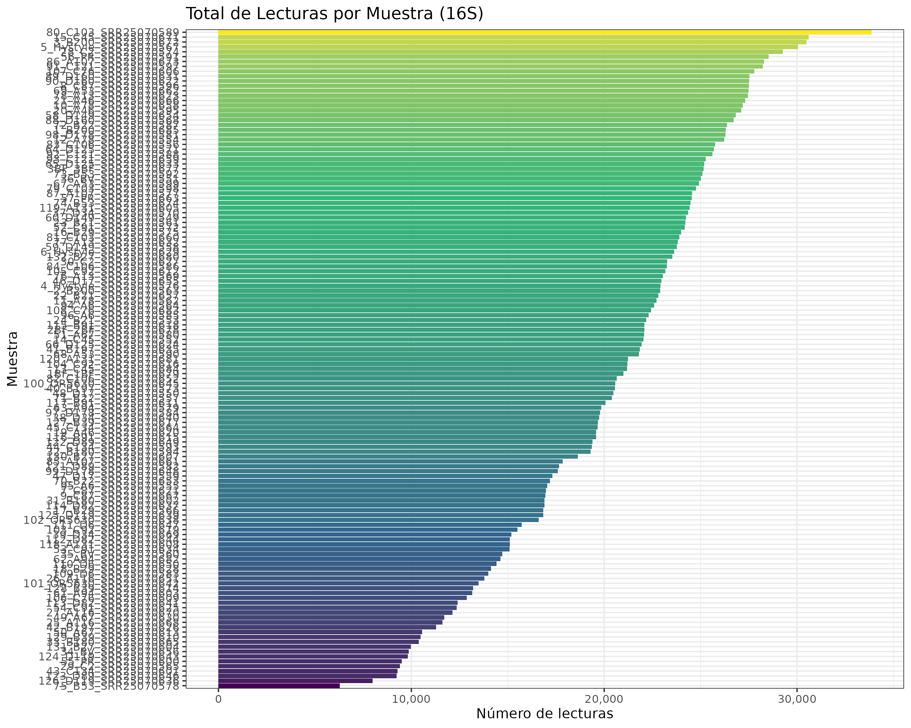
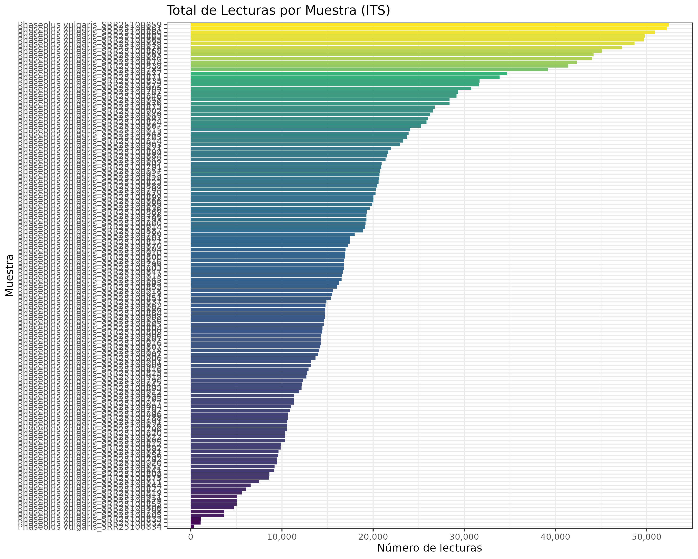

Las leguminosas pertenecen a la familia Fabaceae, comprenden 750 géneros, 19 300 especies (Montejano-Ramírez & Valencia-Cantero, 2024). La distribución geográfica es amplia, crecen adecuadamente en climas tropicales y húmedos, pero se adaptan en cultivos de zonas semiáridas (Majidian, 2022). El cultivo de lentejas y garbanzos deriva del Oriente Medio, en el otro extremo, regiones de Mesoamérica provienen las judías comunes con los tipos marino, negro y pinto (Majidian, 2022).
Las legumbres contribuyen a la seguridad alimentaria y es la base de la dieta de la población mundial porque proporcionan alto contenido en proteínas, bajo contenido de lípidos, fuente de Fe, Zn y Ca, vitaminas como el folato y carbohidratos como la fibra dietética y almidón (Martín-Cabrejas, 2019). Las legumbres contribuyen a la mitigación del cambio climático y promueve la diversidad porque reduce los gases de efecto invernadero en la atmósfera, reduce a su vez, plagas y enfermedades al alterar el ciclo biológico de su desarrollo (Yeremko et al., 2025).
El nitrógeno (N2) es un elemento que compone el 78.1 % de la atmósfera terrestre, pero no es asimilable en el suelo. La fijación biológica de nitrógeno es realizada por las bacterias fijadoras de nitrógeno conocidas como rizobacterias. A partir de estos microorganismos, la planta adquiere este macronutriente que compone a las proteínas, ácidos nucleicos y compuestos nitrogenados (Athul et al., 2022).
Las leguminosas establecen relaciones simbióticas con bacterias gram-negativas del filo Proteobacteria, género Rhizobium (Shumilina et al., 2023). Está simbiosis puede fijar entre 100 y 300 ha-1 de nitrógeno atmosférico (N2) anualmente, proporcionando 139-175 millones de toneladas de nitrógeno al suelo, reduciendo el costo de aplicar 80-90 toneladas de fertilizantes nitrogenados (Yeremko et al., 2025). La forma biodisponible del nitrógeno en el suelo es mediante los compuestos orgánicos e inorgánicos como nitratos -NO3, nitritos -NO2 y iones de amonio -NH4 (Yeremko et al., 2025).
El establecimiento de la simbiosis leguminosa-rizobios como un N2-sistema fijador está interconectado con el estado fisiológico del hospedador vegetal, determinado por la influencia de factores ambientales como el tipo de suelo, la temperatura, la humedad, el pH, la salinidad, el contenido de macronutrientes y micronutrientes.
Este proyecto es una réplcia de resultados de Influence of organic plant breeding on the rhizosphere microbiome of common bean (Phaseolus vulgaris L.). (Park et al., 2023)
Los datos para el análisis se obtuvieron de NCBI BioProject: RJNA988238 (Bacteria) y PPRJNA989655 (Hongo).
El procesamiento del filtrado de calidad de los ASV (Q ≥ 33), procesamiento de lecturas paired-end, eliminación de las secuencias de primers y quimeras ocasionadas por el PCR utilizará DADA2 (Sahil et al., 2025). Las lecturas tendrán una filtración de 260 pb en dirección forward y 240 pb en dirección reverse, utilizando los parámetros maxN = 0, maxEE = c(2,2), truncQ = 2 y rm.phix = TRUE (Mataranyika et al., 2024). Los ASV conservados serán ≥ 270 pb (Sahil et al., 2025). La asignación taxonómica se realizará mediante alineamiento contra la base de datos SILVA v131.1 y UNITE_v2025, los niveles taxonómicos van desde el filo hasta el género conservando ≥ 99% de identidad (Overgaard et al., 2022). La rarefacción se realizó para estandarizar la comparabilidad para los cálculos de diversidad (Mataranyika et al., 2024).
Los análisis de diversidad alfa y beta se realizarán en R utilizando el paquete phyloseq. Las diferencias entre grupos en la diversidad alfa utilizará las pruebas de Kruskal–Wallis o de rangos de Wilcoxon, mientras que los valores de p serán ajustados por comparaciones múltiples mediante el método Benjamini–Hochberg FDR (Yurgel et al., 2026). Asimismo, las diferencias entre grupos se analizarán mediante PERMANOVA (función adonis) con un máximo de 999 permutaciones (Sahil et al., 2025). Se elaborará un mapa de calor (heatmap) a partir de los coeficientes de correlación calculados utilizando el paquete pheatmap, empleando la correlación de Spearman, con el propósito de estimar la relación del bacterioma respecto a la muestra. La gráfica de la composición taxonómica se realizará con el paquete ggplot2 (Ghotbi et al., 2025).
Las muestras de los ASVs fueron seleccionadas mediante el umbral de 10 para excluir ruido de secuenciación y eliminaron las que están presentes menos del 5% de las muestras. Las muestras de los ASVs de 16S de 5450 nos quedamos con 3696, los ASVs de ITS de 6634 nos quedamos con 6433. Las muestras de 16S mediante la rarefacción de 16S es de 135 y el ASVs rarefación fue de 1754. Las muestras de ITS la rarefacción es de 134, y el ASVs rarefación fue de 74. Los resultados gráficos del total de lecturas por muestras son los siguientes:

